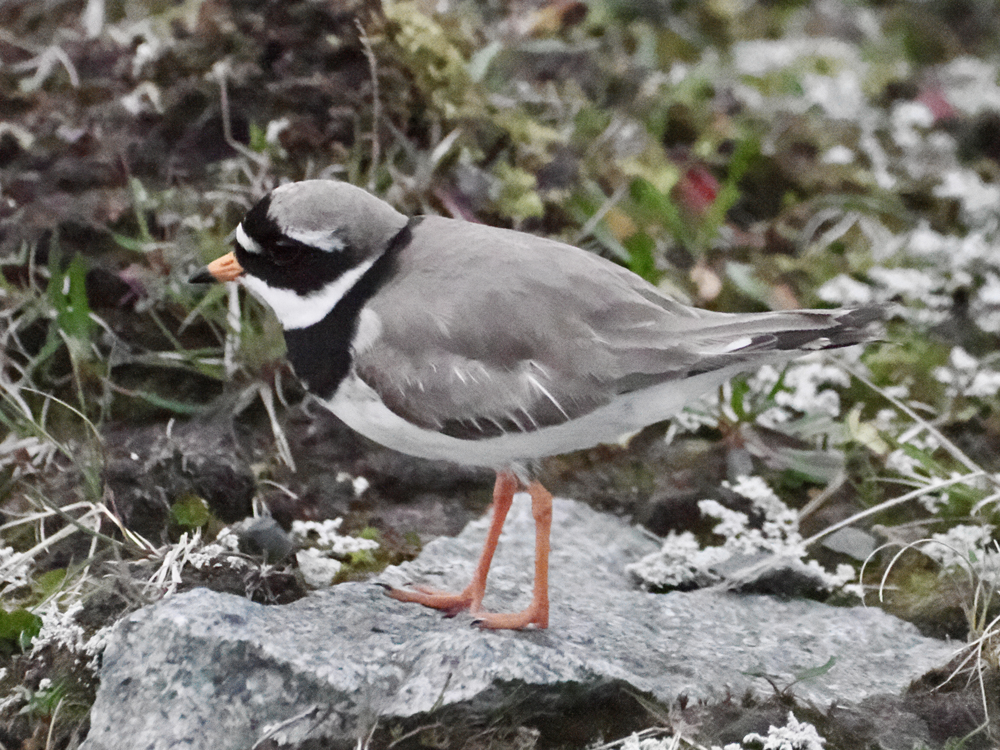
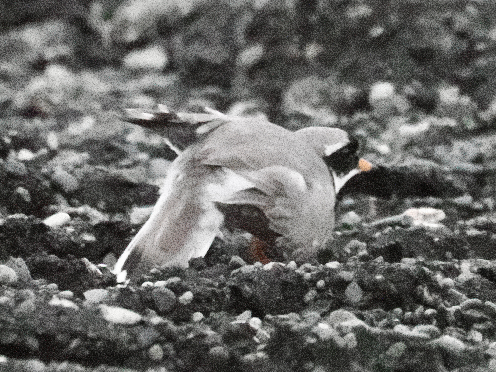

Common Ringed Plover
Charadrius hiaticula
Order: Charadriiformes
Family: Charadriidae

A tiny, wide-eyed plover. Has a brownish back, black mask and breast band, orange legs, white forehead, and white underparts. Bill is orange with a black tip in breeding plumage.

Breeds on open ground with little vegetation. When a threat approaches, performs a broken-wing display, where the parent bird pretends to be injured to lure the predator away. After minutes of running rounds with this little one, I still couldn't find its camouflaged nest.